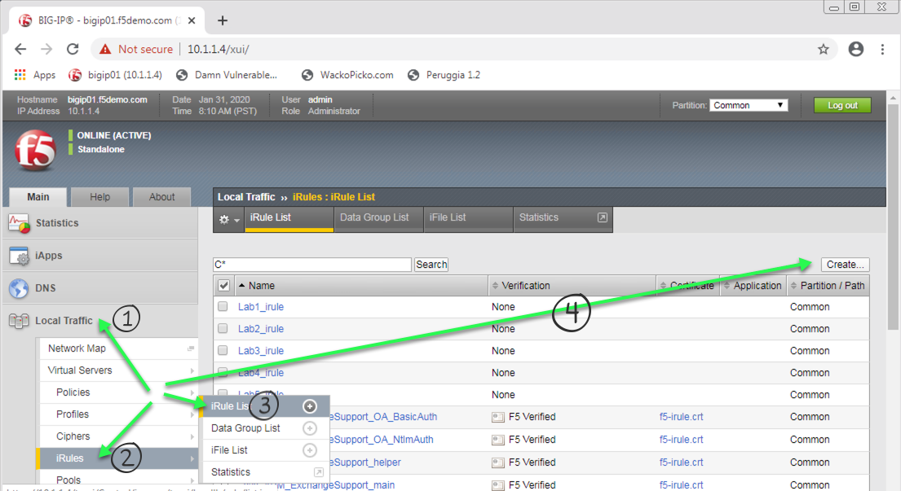
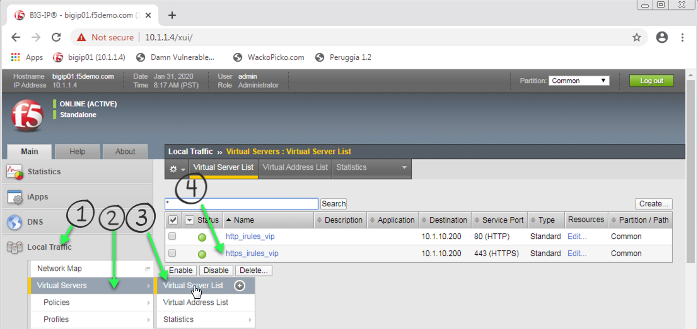
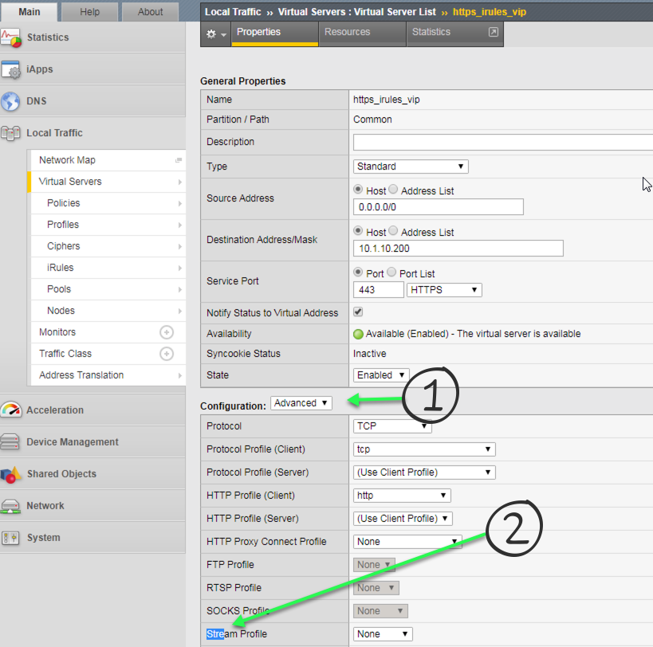
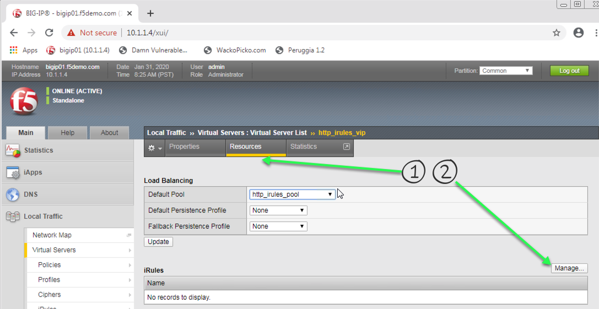
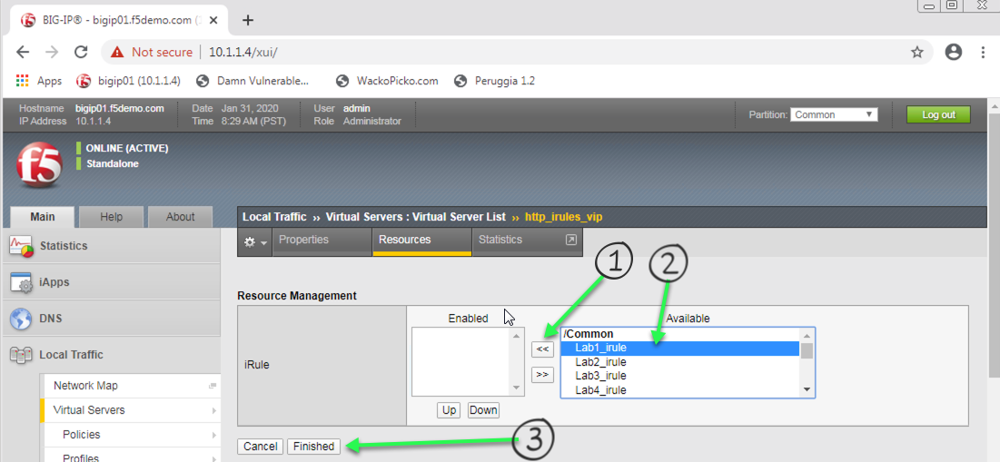

2.1.1.4. Lab 4 - Stream Profile¶
Create a Stream Profile to change the body of the DVWA site
Important
- Estimated completion time: 10 minutes
Open Chrome Browser
Enter https://bigip1 into the address bar and hit Enter

- Login with username: admin
- password: admin.F5demo.com
Click Local Traffic -> iRules -> iRules List
Click Create button
Enter Name of Stream_iRule
Enter Your Code
Click Finished
Click Local Traffic -> Virtual Servers -> Virtual Server List
Click on https_irules_vip
In the Configuration section ensure it says Advanced in the drop down
Go to the Stream Profile section and select stream
Scroll to the bottom and click the Update button
Click on the Resources tab at the top of the page.
Click Manage button for the iRules section
Click on Stream_iRule from the Available box and click the << button, thus moving it to the Enabled box, your first and now second iRule should be in the Enabled box.
Click the Finished button
Open the Firefox browser
Enter https://dvwa.f5lab.com and ensure you get there and it is HTTPS and that the word Damn is replaced with Darn
{kind=link}
{kind=link}
{kind=link}
{kind=link}
{kind=link}
Hint
Basic Hint if you need a hint here is some example code:
Link to DevCentral: https://clouddocs.f5.com/api/irules/STREAM.html
If you are really stuck, here is what we are looking for:
- When HTTP_Request comes in
- Second we need to disable both encoding the stream profile for the request
- When HTTP_RESPONSE comes back
- Next we need to change our stream matching string and turn on the stream profile again.
- Now you should have enough to understand and the majority of code to create the iRule. If not here is the complete iRule.